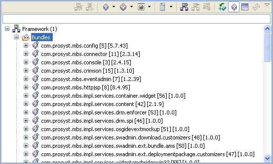

mToolkit allows you to view the IDs and the versions of the currently installed bundles on the connected OSGi frameworks. To display the bundle IDs and versions, select a bundle from the target device, and check the Show Bundle IDs and Show Bundle Versions options from the popup menu. As a result, the bundle IDs and versions will be displayed next to each bundle:

Figure 1: Displaying bundle versions and IDs

OSGi Management Overview
OSGi Frameworks Tree

Installing and Uninstalling a Bundle
Starting and Stopping a Bundle
Viewing the Manifest of a Bundle

Frameworks View Tree Icons
Frameworks View Menus and Toolbar